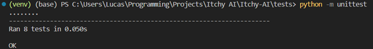
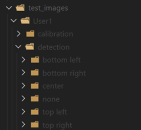
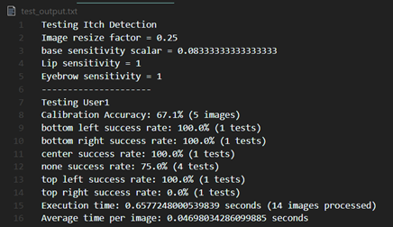

As this project's primary focus was on the itch detection algorithm, the majority of the testing was directed towards ensuring it's functionality. Consequently, we did not divert any resources to setting up a test strategy (although still informally tested) for both the python and HTML webcam capture and display systems. Their purpose are for visualizing the algorithm for debugging, testing, and gathering feedback, but not are not core proponent to the algorithm and end deliverable.
To cover all relevant aspects of the algorithm we've conducted 3 different types of testing: unit testing integration testing, and user acceptance testing.
The unit testing was the first line of testing that was setup during development to ensure that each function created was operating as intended and returned the desired results. The unit testing focused on testing the ItchDetection and FaceData classes as those were the main bulk of the complex logic and the sole proponents to the itch detection algorithm, which's the primary deliverable.
The integration testing was dedicated to black box testing, ensuring that given a certain input, the output of the itch detection algorithm would consistently return the expected result. A large number of images were given to both measure an accuracy value of the algorithm and also to measure performance of the algorithm, as for higher quality images processing time can get very high.
Finally, we conducted user acceptance testing to gather feedback from users. As the result is an AI, UI design and user flow is not something we're focused on, rather we will be mainly focusing on how accurate the detection feels to the user, and how unaccommodating the constraints may feel to the user (lighting, face positioning, minimal movement).
To perform unit tests we used the built in python unit test library as it was sufficient for doing the necessary tests. Unit testing was run on both the ItchDetection and FaceData classes, by inputting certain data and checking if the output matches, note that if the output was a float the equality was tested to 8 decimal places due to the existence of floating point errors.
As running most functions depended on a class FaceData object being initialized first, there was a need to generate face landmarks data. Given that calculations such as center points and offsets needed to be calculated externally to guarantee the authenticity of the unit tests, and the large number of points (72 points) associated with each set of face landmarks, we needed to make a few optimizations to generating the test data to ensure that we did not spend half our time on generating test data.
The first optimization was to reduce the amount of coordinates for each landmark. Given the design of the code, this change would not have any effect on the result. However, to make sure that the calculations such as mean and standard deviation are properly tested, we cannot have too few points either, therefore we constrained ourself to using no less than 3 points to represent most of the landmarks.
The second optimization was to create functions to customize the data and the expected results. We made two functions, one to modify the landmarks by scaling and/or applying an offset, and one to modify the expected the data for expected outputs. The code below just traverses the dictionary of data and modifies them with a given offset (only if it is a coordinate) and multiplies it with a given scalar.

An example of modified data is when we apply an offset to a face, we expect the centers to move by the same offset as well, but we expect the offsets to stay the same as they are relative to the face. Using various permutation of these across different data points allows for a large range of test data to be generated

Once we have access to the data, we just generated two test classes for the ItchDetection and FaceData classes, each with their own functions testing groups of functionalities, across the various amounts of test data. Overall, we have a total of 8 test cases:
-- FaceData:
o Test center points
o Test offsets
o Test distance to vector function
o Test angle conversion function
-- ItchDetection:
o Test scale difference
o Test itch location
o Test scaled comparison
o Test sensitivity change
When run in the command line, the following output is given: 
The Integration we designed oversees testing the functionality, accuracy, and performance speed of the itch detection algorithm. This process involves running a set of images through the itch detection algorithm and matching them with the expected result.
The image used for the integration testing are arranged in the "test_images" folder (not pushed to the GitHub due to space constraints). The folder can then be populated by a series of different test conditions, in the example below the first test scenario is called "User1", which represents a same user in a same environment.
Within the test scenario two folders must be included: "calibration" and "detection", which will contain the images relating to user calibration and user itch detection respectively. Within the calibration folder the calibration images can then be added directly. Contrarily, the detection folder still needs additional folders. It needs to be populated by folders with the names respective to the itch locations (itch location names defined in config folder) which the images should match, e.g. for an image where you'd expect the algorithm to detect a bottom left itch, the image should go into the bottom left folder.

Upon running the integration test, the test script will go through each user, calibrate the ItchDetection class based on the calibration folder. It then calls the detectItch function on each landmark generated from the images in the detection folder and cross references the location from the ItchData output with the name of the folder to see if the algorithm gave the correct output. In the process it will output the outcome of each individual test, as well as the current config settings (sensitivity, resize factor) and calibration information. The runtime of each test scenario is also logged to the output with an average processing time per image given.
Example test:

Through the integration tests we were able to learn more about the algorithm. Firstly, calibration accuracy had a large impact on the success rates. This may seem obvious at first, but our calibration images were taken to be as still as possible, and despite this there were fluctuations in different lighting environments, which lead to less steady results. Secondly
To get further understanding of how the itch detection feels when used live, we gathered a group of various testers to give us feedback on different aspects of the itch detection algorithm. As the main focus of the project is about the algorithm, we won't be taking feedback on the UI or user flow.
For our testers, to get a full extent of the algorithm's effectiveness in a real world settings, we decided to get a diverse mix of individuals which are in different physical conditions, which includes a quadriplegic individual, our target user base, as well as an individual affected by a less severe physical disability, and finally an individual without any physical disability.
Frank Diandra Dennis
Frank is a quadriplegic that's unable to move anything from the neck down due to his injury back in Vietnam.
Diandra has limited hand mobility, she is still able to touch her face but she finds it harder than most of us, she spends a lot of time sitting down with low movement.
Dennis is an active bartender, he spends most of his days out and moving around, he has no physical disability but can get quite lazy when he is watching movies or playing video games.
For user acceptance testing we will be covering the following test cases:
Obeying